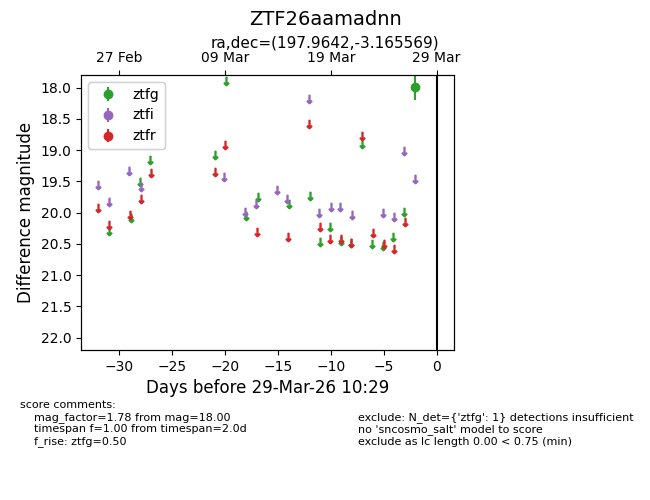
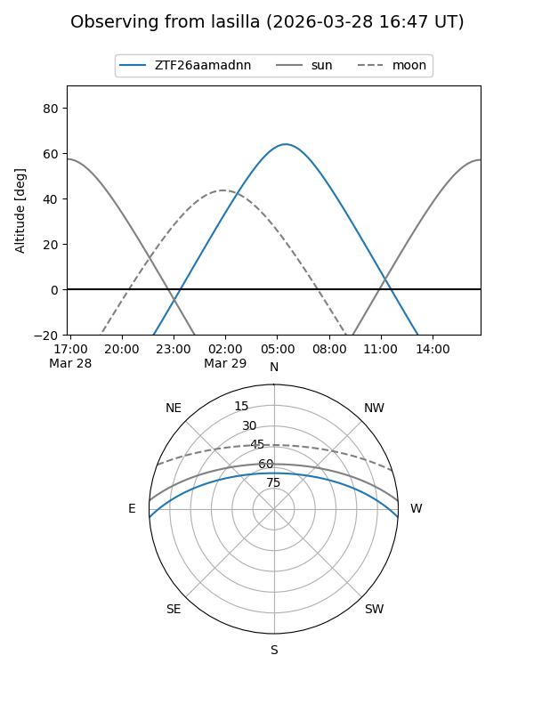
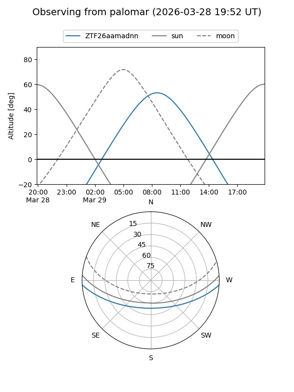

ZTF26aamadnn
Target ZTF26aamadnn at 2026-03-29 10:32
Aliases and brokers:
FINK: link
Lasair: link
ALeRCE: link
alt names
ZTF26aamadnn (ztf,fink_ztf)
Coordinates:
equatorial (ra, dec) = 197.9642,-3.16557
equatorial (HMS+DMS) = 13:11:51.40,-03:09:56.05
galactic (l, b) = (312.9554,+59.30822)
Flags:
Photometry:
last ztfg=18.00
1 ztfg detections
Lightcurve

Visibility


Additional plots